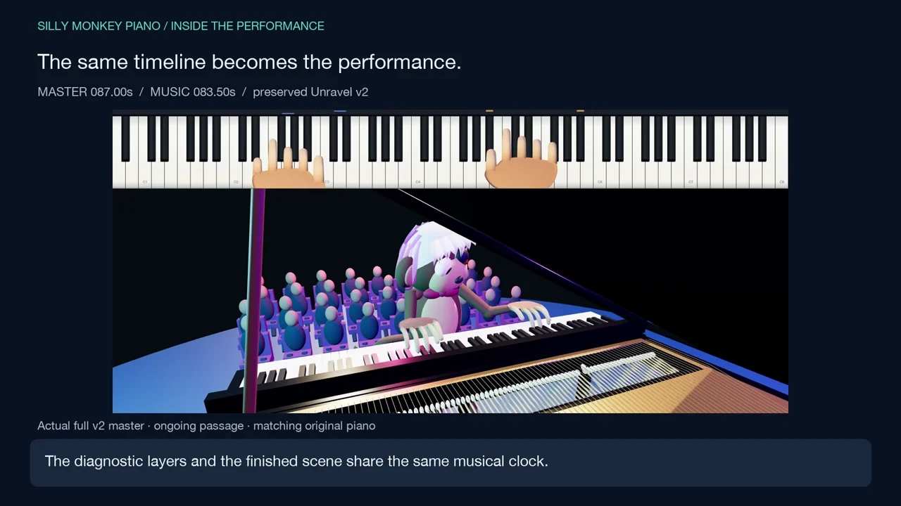
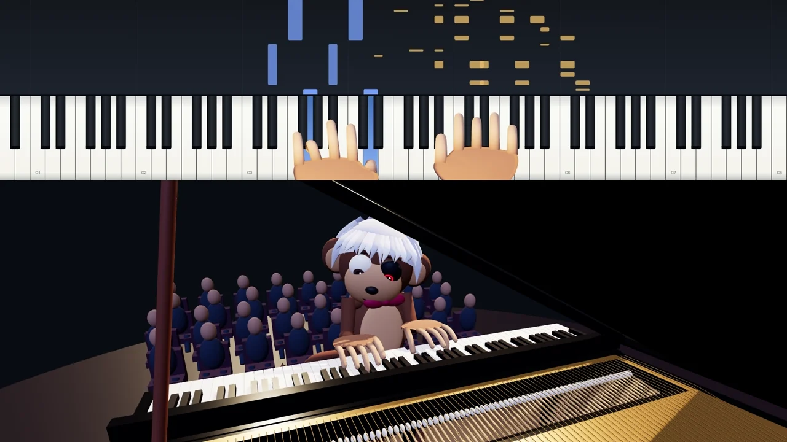
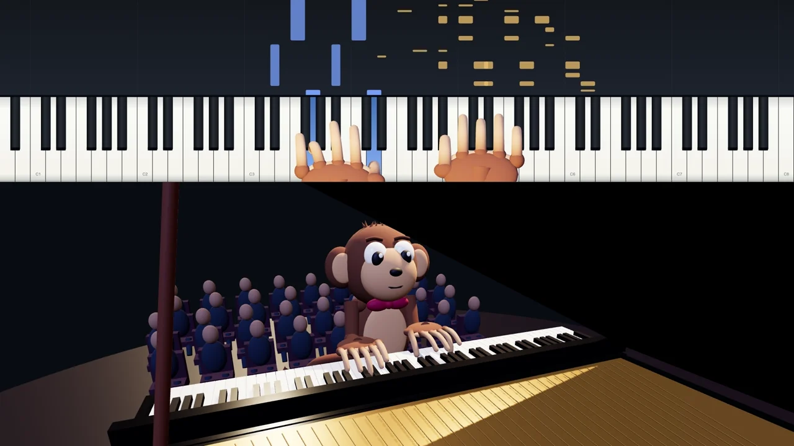
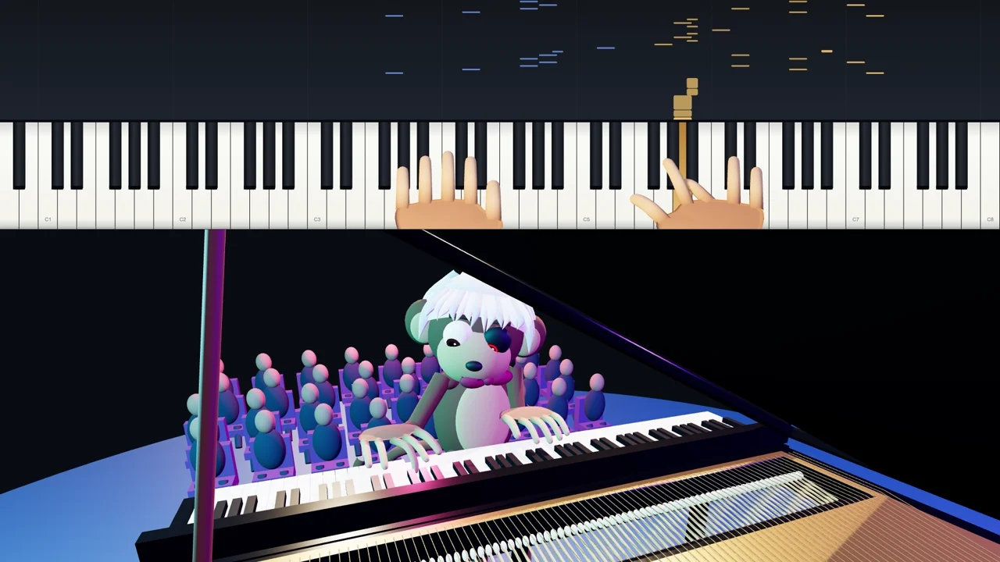
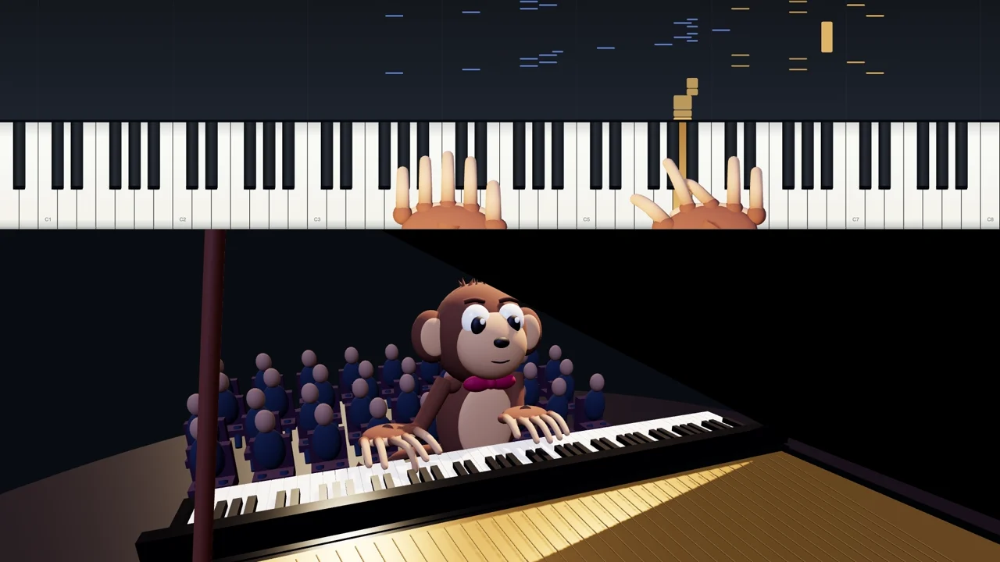

Constraints before polish
Held notes, finger reach, fixed bone lengths, and key contact shape the motion before camera presentation.
Human direction × AI-assisted execution
From a musical idea to a performance you can see, hear, inspect, and improve.
A case study in turning creative requirements into a working simulation—and making each revision reviewable.
Optional soundtrack: Tchaikovsky’s Pas de deux, from the project’s piano performance.
Music · articulated animation · production tooling

The fingers must reach the right keys, hold them for the right time, and prepare the next gesture. Pedal sustain must continue when a finger leaves. The finished video must preserve those decisions through every crop and export.
The project connects musical events, articulated motion, rendering, and versioned review. Human direction sets the constraints and evaluates the result; AI-assisted implementation turns that feedback into specific changes.
01 / See the result
Engineering demo visuals selected October 8, 2026 · Pas de deux portfolio soundtrack
The Review Hub sequence is a labeled reconstruction, not a recording of live navigation. Demo visuals show Unravel; this portfolio uses the project’s Pas de deux recording as an illustrative soundtrack, not a note-synchronized Unravel performance. Background music pauses when the demo plays.
00–22s: The Unravel performance, followed by a reconstructed Review Hub: compare revisions, inspect evidence, and identify selected files.
22–38s: Note attacks, visible releases, and pedal sustain have separate timing. Held notes constrain fingering. Computed targets drive fixed-length joints, with fingertip contact measured against the keyboard.
38–62s: Matched passages show revised hand surfaces, gaze, character styling, room lighting, and closing gestures while preserving the musical timeline.
62–88s: Recorded publishing outcomes and the role of human direction: workflow design, creative constraints, versioned review, and specific revisions.
02 / How it works
A visible key press and a sustained sound are related, but they are not the same event.
01 / MUSICAL EVENTS
Pitch and onset identify a strike. Physical key duration guides the hand. Musical release and pedal state determine how long the sound continues. Keeping these signals separate prevents a moving hand from abruptly cutting off a sustained note.

Held notes, finger reach, fixed bone lengths, and key contact shape the motion before camera presentation.
Event and sampled geometry checks catch concrete defects. They do not replace listening or watching the performance.
Complete and check the main performance first. Derive portrait clips from its frozen timeline rather than rebuilding the music independently.
03 / Make the change visible
Matched frames from frozen Unravel v1 and v2. Both versions were produced on September 29, 2026. Drag the divider or use the arrow keys.
V2 revises the hand surface, directs gaze toward the performance, and adds the requested Unravel character styling. The musical event timing stays the same.
Same source moment: master 00:47


BEFORE / V1AFTER / V2The closing passage receives revised hand transfers and pose. These are motion changes, not a new performance tempo. Versioned comparisons keep that distinction inspectable.
Same source moment: master 03:55


BEFORE / V1AFTER / V2The frozen v2 delivery records exact reuse of the v1 encoded audio.
04 / Design for review
A revision is only useful if someone can find it, compare it, and tell which file is intended for delivery.
The Review Hub organizes project state, detailed evidence, and selected artifacts. Older versions remain available instead of disappearing when a new one arrives.
RECONSTRUCTED INTERFACE · based on Review Hub records, not a live screenshot
05 / Beyond the render
Pas de deux provides a documented example of the project’s full-video and portrait-release workflow.
Recorded public in the Studio’s September 28–29, 2026 publishing log. Each release connects a selected artifact to a recorded outcome.
Project updates
Follow completed demonstrations and work in progress. A progress preview is distinct from a validated final release.
Read the release log →Project index
01Human judgment connects the creative goal to the engineering decisions—and keeps the evidence attached.
Return to the demonstration ↑